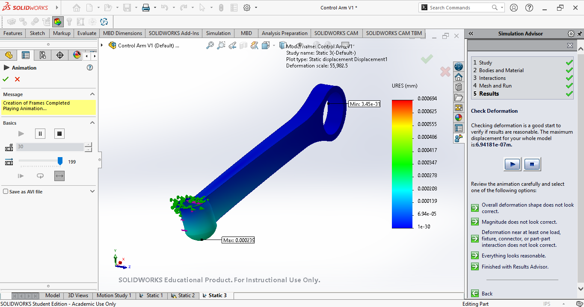
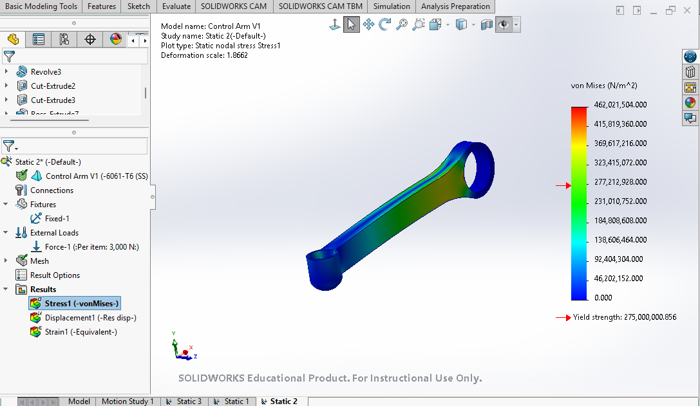
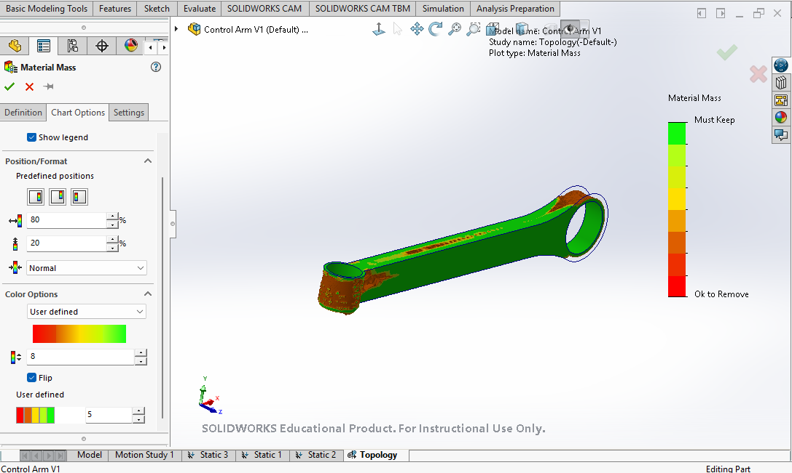

Mechanical Design & Simulation · In progress
Suspension Control Arm
An independent design study of a Mercedes-Benz S550 suspension link, combining suspension research, iterative CAD modeling, and finite element analysis to understand how geometry affects structural performance.
Project Overview
I started this project to move from understanding how automotive suspension works to designing and evaluating a component myself. The focus is a lower control arm link for a Mercedes-Benz S550, connecting the chassis bushing to the wheel-side ball joint.
The project follows an iterative workflow: research the suspension and material options, build a CAD model, examine its response to an applied load, and revise the geometry around the areas that need attention. The current work compares the original V1 model with a revised V2.
Design Iterations
V1: Establishing a baseline
The initial model established the general shape and mounting features. In the first static study, I fixed the bushing mounting location and applied a perpendicular load at the ball-joint location. The results highlighted stress near the bushing support and prompted further research into realistic loading, bending, and reinforcement.
V2: Refining the load path
- Increased section width: changed the documented width from 0.8 to 1.0 inch, adding material in areas identified for reinforcement.
- Added fillets: rounded sharp transitions to encourage smoother stress distribution.
- Revised the ball-joint region: increased the surrounding wall thickness, refined the bore diameter, and replaced the blind-hole arrangement with a through-hole.
- Removed underside material: explored a more efficient mounting geometry while retaining support around the connection.
These changes are being evaluated together. A reduction in stress alone does not establish a better strength-to-weight ratio; mass, displacement, and comparable analysis settings still need to be assessed.
Simulation Results
Local stress comparison near the chassis bushing
I used the SolidWorks Probe tool to record five von Mises stress values at approximately corresponding locations near the main chassis bushing in each design.
| Measure | V1 | V2 |
|---|---|---|
| Average measured local stress | 341.21 MPa | 281.15 MPa |
| Difference from V1 | Baseline | −60.07 MPa (17.6%) |
The journal reports the same simulated loading conditions for this comparison. The result suggests a local improvement in V2, but the probes represent a small region and do not establish overall structural performance.
Latest comparison: verification in progress
The October 18 entry records an approximately 79.9% lower maximum von Mises stress for V2 in a later loading case. I am keeping this separate from the five-point comparison: the selected loading surfaces and boundary conditions still need verification before attributing the difference to geometry.
Current scope: a CAD and simulation study. Mesh convergence, displacement, factor of safety, and physical performance have not yet been established.
Design & Development Log
A condensed record of the research and decisions behind the current design.
- June 20–29, 2026
Research the system
Studied control arms, bushings, ball joints, and different suspension layouts. Researched iron, steel, and manufacturing processes to build a foundation for material selection.
- July 15–17, 2026
Build and test the first model
Created the baseline geometry and ran an initial static FEA study. Identified stress near the bushing and recognized the need for more representative loads and smoother geometry.
- July 22–31, 2026
Connect the results to mechanics
Studied bending, torsion, deflection, and material failure modes. Compared ribs, curved sections, hollow designs, and box sections as ways to improve stiffness and load distribution.
- October 3–7, 2026
Develop simulation skills
Used a simple block model to explore SolidWorks study types and learn how to interpret results before returning to the control arm.
- October 14–18, 2026
Evaluate the redesign
Documented V2 geometry changes, compared local probe values, and investigated the influence of ball-joint wall thickness and hole geometry on the latest stress results.
Next Steps
- Verify equivalent load directions, selected surfaces, materials, and fixtures between V1 and V2.
- Perform a mesh-convergence check around the bushing and ball-joint regions.
- Compare displacement, maximum stress, factor of safety, and mass alongside local stress measurements.
- Refine representative suspension loading cases and evaluate further design changes.
Project Gallery



Screenshots from different studies in the development journal; plot scales and study settings vary.